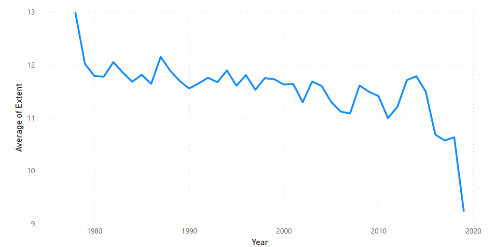
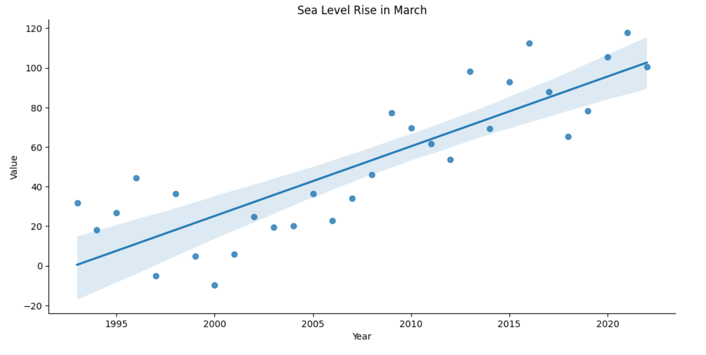
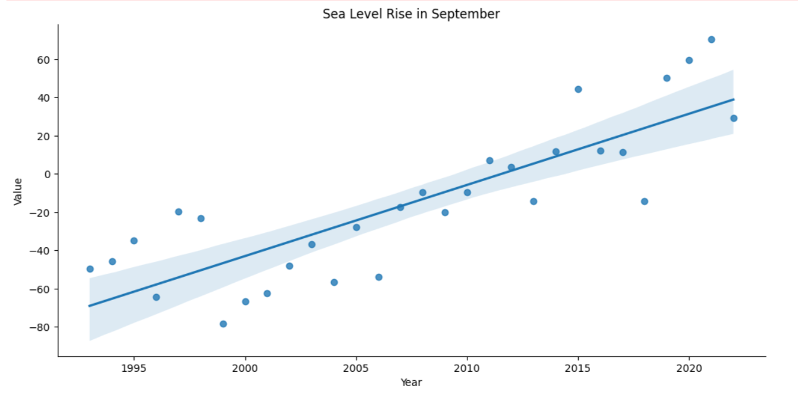
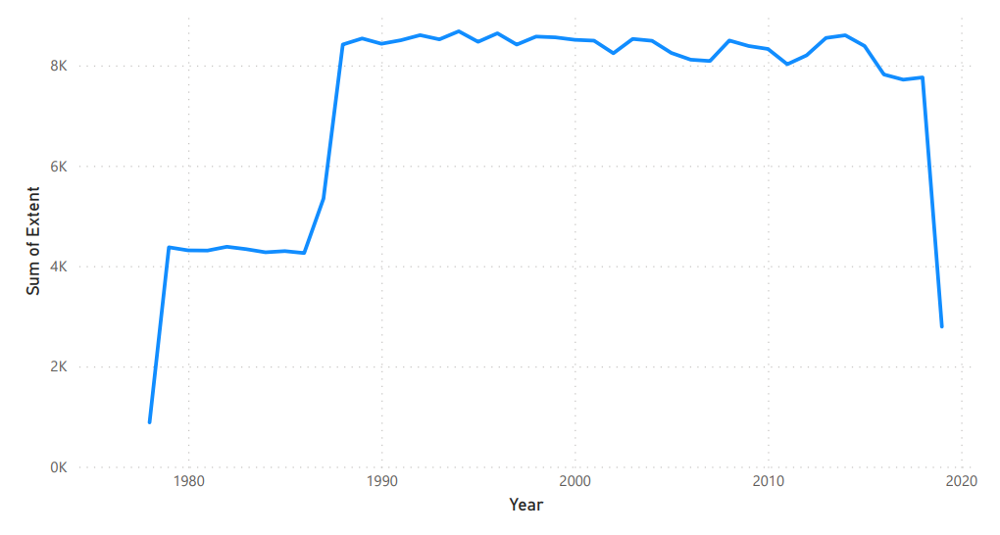

Plots the monthly anomalies of Sea Ice Extent (SIE). Over time, negative anomalies dominate, indicating a consistent reduction in the net surface area of ice sheets compared to the historical baseline. This trend is a key driver of rising ocean volumes.

Illustrates the historical correlation between rising global temperatures and sea-level anomalies. The clear positive slope demonstrates how thermal expansion of seawater and glacial runoff accelerate directly alongside global warming.

Visualizes the historical decline of Arctic and Antarctic sea ice extent (measured in million square kilometers). The steady contraction of ice sheets reduces the Earth's albedo effect, creating a feedback loop that warms the oceans.

A geographic vulnerability risk map of the Lakshadweep islands. Highlighting low-lying regions (average elevation 1-2m), the map designates critical zones at risk of permanent flooding, storm surge inundation, and shoreline erosion as sea levels rise.
Glaciers, Ice Sheets, and Sea Levels
The connection between glacier melting and sea level rise is direct and powerful. When continental ice sheets (like Greenland and Antarctica) and mountain glaciers melt, they transfer millions of metric tons of water into the world's oceans.
This water addition increases the net ocean volume. Simultaneously, global warming causes thermal expansion—water expands as it heats—further raising sea level.
Lakshadweep Vulnerability
Lakshadweep is an archipelago of low-lying coral atolls in the Laccadive Sea, with an average elevation of just 1 to 2 meters above sea level.
Even a minor rise in sea levels leads to severe shoreline erosion, saltwater intrusion into fresh groundwater lenses, and frequent storm surges that threaten to submerge critical areas of islands like Kavaratti and Bangaram.
Machine Learning Model Insights
Two main models drive the analysis and predictions on this dashboard:
The **Glacier Model** uses ordinary least squares (OLS) regression to estimate anomalies in September Sea Ice Extent (SIE) using time variables. The model shows a statistically significant downward coefficient of -0.568 million km² of sea ice per year.
The **Sea Level Rise Model** uses a Long Short-Term Memory (LSTM) network—which is a state-of-the-art neural network architecture designed specifically for time-series forecasting—to predict future sea-level trajectories based on historical monthly sequences. The model predicts a continuous, rising trend through the year 2028.